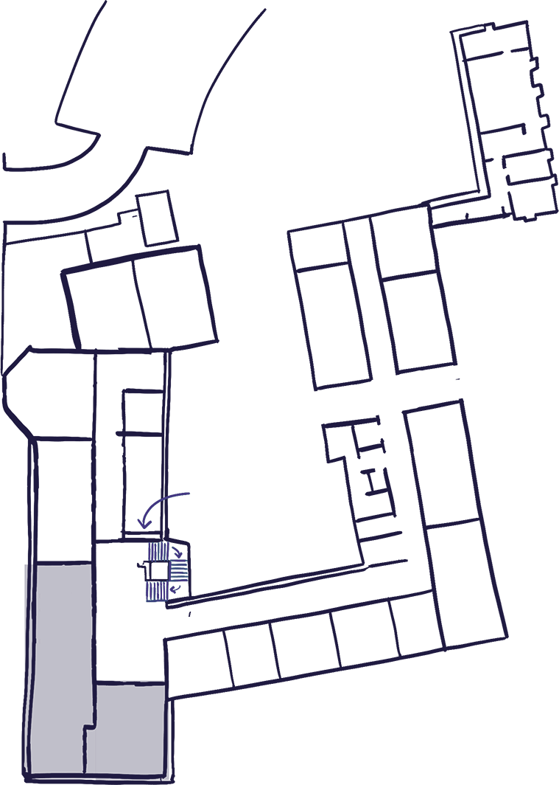
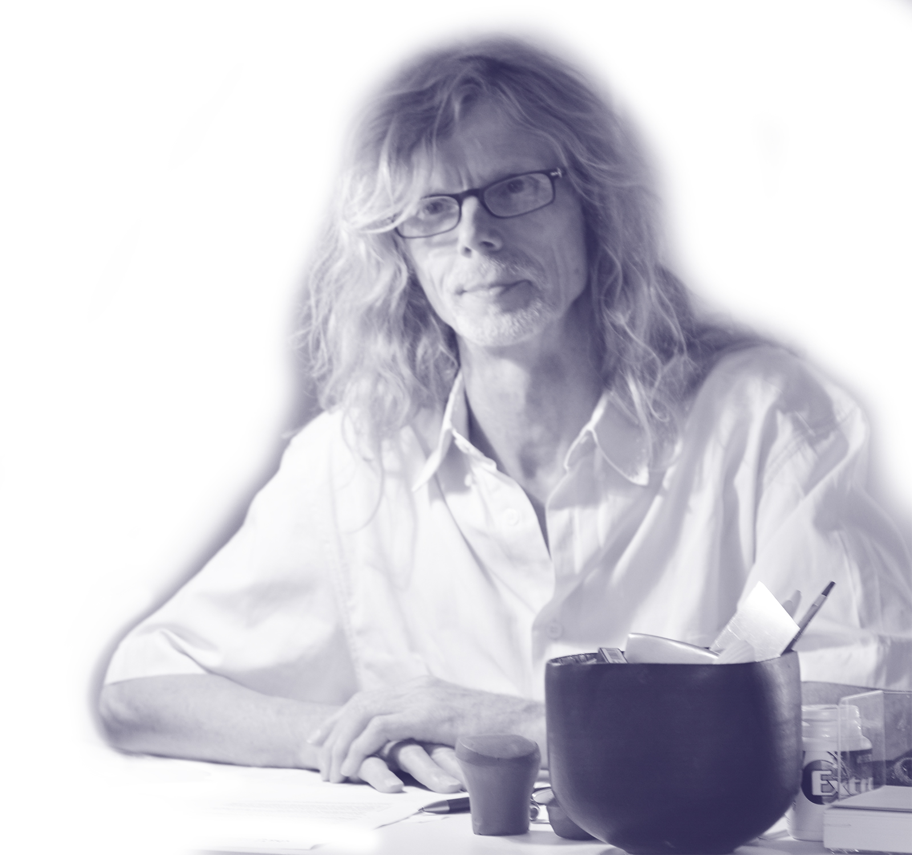
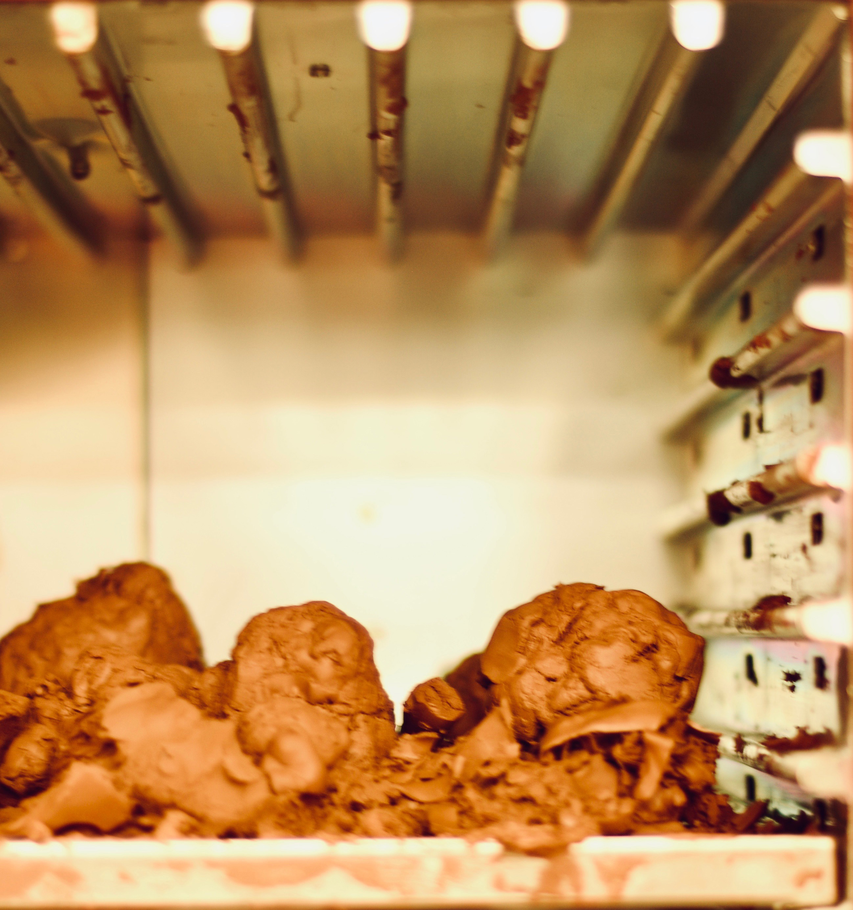
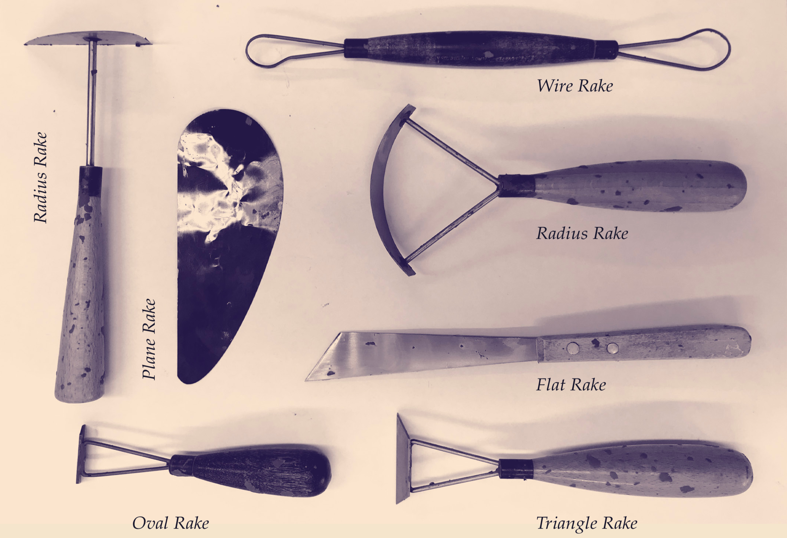
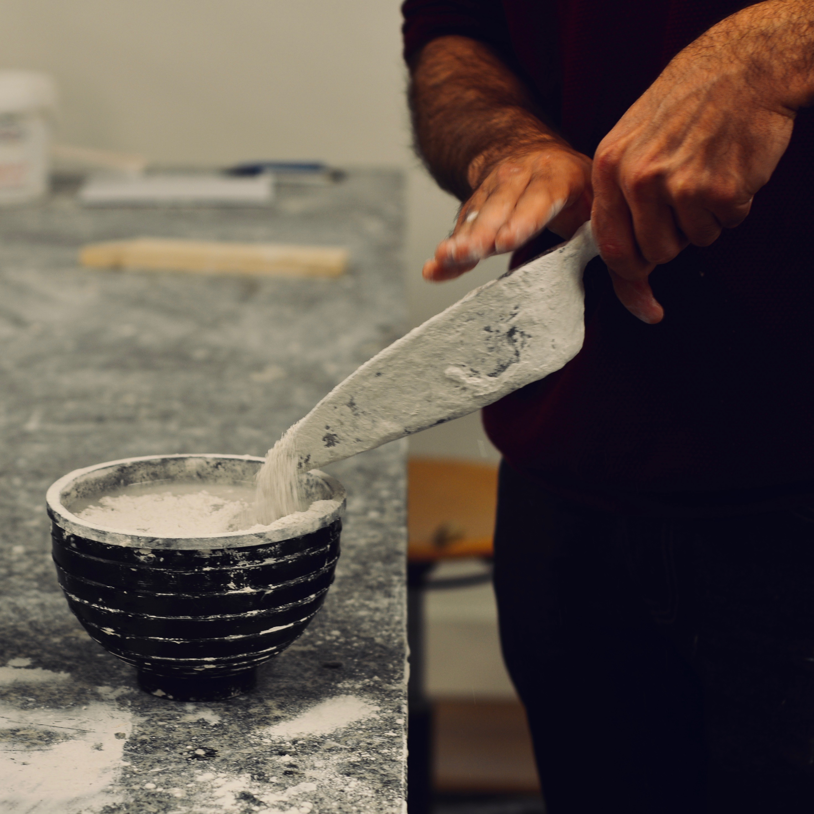

The
Freeform Modeling Workshop
at the
HfG Schwäbisch Gmünd
offers
tools and materials for
clay
and
gypsum
modeling.
Volkmar Meyer-Schönbohm
leads the workshop, teaching courses and providing assistance for student projects. Freeform modeling is a popular technique for
designers and modelers alike for prototyping
3D models, allowing for greater flexibility compared to computer-aided techniques. In fact, many students report the tactile experience of modeling by hand to be
meditative and relaxing, a sentiment proudly echoed by Volkmar himself.
Space, Time, and Volkmar

The workshop is located in the basement of the HfG main building. Just take the stairs down from the cafeteria and turn right.
Despite the rise of digital tools and rapid prototyping, it has never been more important for designers to make things with their hands. Comfort with three dimensions as a sketch and development tool enhances a designer’s sensitivity to form tremendously, and helps them understand how products are made in the real world. If you can build it, you’re halfway to knowing how it could be manufactured.
| Mon – Wed | 09:00 – 12:00 |
| 13:00 – 15:30 | |
| Thu | 9:00 – 16:00 |
| (only clay workshop) | |
| Fri | closed |

Volkmar Meyer-Schönbohm, Head of the Workshop
Designer vs. Modeler
The most important stage in the process of completing a design model is occupied by creative activity and the joint work of the modeler and the designer. There are various combinations of the two-a new designer and an experienced modeler, a veteran designer and a veteran modeler-so it is difficult to define their respective scopes of responsibility or their relationship. Figuratively speaking, it is similar to that between a composer and an instrumental ist. A composer creates a piece of music that reflects his/her image. The instrumentalist transforms the image on the musical score into a sound that reflects his/her sensitivity and skill. The modeler also expresses the designer’s image-but in cubic form and with maximum skill and sensitivity. The information on which model ing is carried out is based on the designer’s ability to convey an sketches, renderings, key-line drawings, and language.
A modeler’s creative work can be roughly broken down into the following three phases:
- Giving the design a framework: The designer’s image is transformed into a solid form that observes the specified proportions and primary dimensions.
- Elaborating on surfaces and lines: Further pursuing the designer’s image, overall proportions and a massive, dynamic impression are represented th rough well-handled surface and lines. A shape that is close to the designer’s image or even superior to it is sought.
- Final refinement: Finally, the car’s 'flavor' is reviewed, including all the details. So me additions may be made to bring the model closer to perfection. For such creative work to be done more smoothly and the results to be better reflected in the product.
Clay Modeling
Industrial Clay is an extremely versatile tool, with many wide-ranging uses for the medium. Model-making has been a tool for designers for thousands of years. You try something out, tweak it, scrap it, and try again. It turns the imagined into the real, and lets the idea speak for itself.
Computers haven’t changed this. No desktop simulation, VR goggles, or even lush artistic rendering can change the value of having an actual artifact in front of you to look at and touch. It comes as no surprise that physical modeling still thrives in design studios around the world—particularly in the automotive industry. It’s the primary tool that designers use to craft their vision, and by far the easiest way for production teams and execs to fully grasp and evaluate the work, both aesthetically and practically.
It enables us to intuitively create a form that appeals to people's hearts and mind.
Advantages and Disadvantages of Clay
Advantages
- Easily moldable at 50-60°C
- Reusable (arbitrarily many times)
- Stable (hard) model at 22°C
- Model can be modified at any time to any shape by reheating
- Clay attaches to wood or styrofoam without any glue or adhesive
- Models can be coated with special paints
- Can be used as a negative mould for plaster, polyester, or silicone
Disdvantages
- Weak edge stability
- Cannot be used for deep draw moulding
- Stable coating is difficult, since clay can expand/contract with temperature

Modeling Tools

The main purpose of a rake is to remove material in an efficient manner, giving you a clay form that is representative of the design required, even if it is a very rough representation. By achieving the basic form very early in the modeling process, the designer has time to consider changes that will enhance the overall look thus leading to an appealing design.
Rakes come in various forms: from large flat rakes which are used primarily on convex surfaces to curved rakes which are used on concaved surfaces. They usually range in size from 2"or 50mm to 6" or 150mm in width but can be of any size if custom made. The blade is normally double sided which gives you the opportunity to file teeth into the opposite edge. The reason for this is to reduce the amount of resistance when shaping the clay surface.
Gypsum Modeling
Gypsum is a raw material used for all things ceramic. Gypsum is naturally occurring mineral (calcium sulfate dihydrate), which is quarried and ground to a fine powder. Gypsum plaster is produced by heating raw powdered gypsum to 120-130°C. When mixed with water, gypsum plaster begins to recrystallize andcan be used as a modelling material. After the water fully evaporates, the resulting model is sturdy and partic- ularly absorbent. Oftentimes, plaster with particular properties is desired, such as especially sturdy plaster for compression molding or especially porous plaster for casting. The mate- rial properties of gypsum plaster can be manipulating by varying the ratio of gypsum powder to water.
Advantages and Disadvantages of Gypsum
Advantages
- Excellent surface finish and good dimensional accuracy
- Minimum possible cross-section is 0.6mm (0.024in)
- Near net shape casting, which can be a cost advantage on complex parts
- No shrinkage cracks
- Quick setting time
- Models can be coated with special paints
- Can be used as a mould for plaster, polyester, or silicone
Disdvantages
- Cannot be used in moist situations.
- Cannot be used for models with thin shapes models are heavy and brittle
- Breakage in models are permanant

The Meditative Experience
Self-Expression and Self-Discovery
In an intensive therapeutic environment, you are continuously invited to give verbal expression to your thoughts, feelings, perceptions, and experiences. However, words are not the right medium for all forms of expression–there are thoughts we have that are too complex or overwhelming for words to hold. Freeform modelling provides a new, rich language to give voice to your inner self through sculptural form, allowing you to discover new avenues of communication and introspection of the mind.
Stress Relief and Relaxation
The tactile experience of clay and plaster can invite a deep sense of relaxation and well- being. As your mind and body become enveloped in the world of creativit, your heart rate and blood pressure lower and your stress level naturally sinks. The clay disrupts intrusive thoughts that interfere with your ability to live in and enjoy the moment. By allowing you to step outside of yourself and devote your energies to the production of something new, pottery can provide a much needed emotional reprieve and new perspectives.
Mastery and Self-Confidence
Freeform modelling allows you to discover previously unrealized strengths as you gain mastery over the creative process, developing both technical skill and expressive abilities. The sense of mastery you gain as you develop your personal artistic style can be a source of invigoration, enhancing your confidence and sense of purpose at an emotionally vulnerable time in your life. In freeform modelling, there is no competition, no right way or wrong way, but only there are infinite possibilities for creating pieces that speak to you.
Urmi Banerjee
Matthew Jörke
Athang Samanth
HfG Schwäbisch Gmünd Typography/Image/Layout
Matthew Jörke
Athang Samanth
HfG Schwäbisch Gmünd Typography/Image/Layout